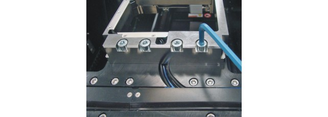

Deinstalling Direct-Probe bridge beam from Accretech UF3000 EX wafer prober
About this task
This topic tells you how to remove a bridge beam installed on the Accretech UF3000 EX Wafer Prober.
Before you begin
Note Deinstallation must only be performed by trained personnel experienced with the
operation and maintenance of Accretech UF3000EX series probers.
Procedure
-
 Remove bridge beam sensor wiring/air tubing covers from the prober head-stage.
Remove bridge beam sensor wiring/air tubing covers from the prober head-stage.

-
Remove the bridge beam mounting screws.
 Use an 8 mm Allen wrench.
Use an 8 mm Allen wrench.
Results
You have de-installed a bridge beam from the Accretech UF3000 EX wafer prober.

What to do next
If you need to install the PSRF bridge beam now, go to Bridge beam installation on Accretech UF3000 EX - Phase 1
Functional changes
- Introduced in SmarTest 7.4.3